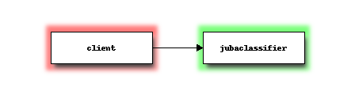

Before trying the tutorial, you need to install Jubatus and Jubatus Python client. See Quick Start for instructions.
This tutorial uses News20 dataset (20news-bydate.tar.gz), which is popular for experiments in text classification. News20 has 20 different newsgroups and users post their message on a suitable newsgroup. News20 is divided into learning data (20news-bydate-train, 80%) and experimental data (20news-bydata-test, 20%).
The goal of this tutorial program is to learn model from 20news-bydate-train and to guess the newsgroup to post from 20news-bydate-test.
This tutorial covers the following topics:
Run jubaclassifier program, which provides classification feature, specifying a configuration file. Examples of configuration file are stored in $PREFIX/share/jubatus/example/config directory.
$ jubaclassifier -f /path/to/share/jubatus/example/config/classifier/pa.json
I0110 13:43:07.789201 1855 server_util.cpp:250] starting jubaclassifier 0.5.0 RPC server at 192.168.0.1:9199
pid : 1855
user : oda
mode : standalone mode
timeout : 10
thread : 2
datadir : /tmp
logdir :
loglevel : INFO(0)
zookeeper :
name :
interval sec : 16
interval count : 512
zookeeper timeout : 10
interconnect timeout : 10
I0110 13:43:07.789721 1855 server_util.cpp:77] load config from local file :/path/to/share/jubatus/example/config/classifier/pa.json
I0110 13:43:07.790897 1855 classifier_serv.cpp:117] config loaded: {
"converter" : {
"string_filter_types" : {},
"string_filter_rules" : [],
"num_filter_types" : {},
"num_filter_rules" : [],
"string_types" : {},
"string_rules" : [
{ "key" : "*", "type" : "str", "sample_weight" : "bin", "global_weight" : "bin" }
],
"num_types" : {},
"num_rules" : [
{ "key" : "*", "type" : "num" }
]
},
"method" : "PA"
}
Jubatus classification server is now started. Jubatus servers listen on TCP port 9199 by default. If you would like to use another port, specify it using --rpc-port option. For example, to use port 19199:
$ jubaclassifier --configpath /path/to/share/jubatus/example/config/classifier/pa.json --rpc-port 19199
Jubatus and Jubatus clients communicate with each other in MessagePack-RPC protocol over the TCP/IP network.

OK, let’s download the tutorial program and the dataset.
$ git clone https://github.com/jubatus/jubatus-tutorial-python.git
$ cd jubatus-tutorial-python
$ wget http://qwone.com/~jason/20Newsgroups/20news-bydate.tar.gz
$ tar xvzf 20news-bydate.tar.gz
Reboot jubaclassifier with config.json , which is a configuration file prepared for this tutorial. Note: do not use the previous configuration file ( pa.json ) that was used above.
$ jubaclassifier --configpath config.json
Then, run the program.
$ python tutorial.py
Now you see the result of classification! For each message, OK means that Jubatus estimated the label correctly, and NG means that estimated label was wrong.
Read below for more detailed description.
After expanding 20news-bydate.tar.gz, you see files like this:
20news-bydate-train
|-- alt.atheism
| |-- 49960
| |-- 51060
| |-- 51119
| |-- 51120
: : :
|-- comp.graphics
|-- comp.os.ms-windows.misc
|-- comp.sys.ibm.pc.hardware
|-- comp.sys.mac.hardware
|-- comp.windows.x
|-- misc.forsale
|-- rec.autos
|-- rec.motorcycles
|-- rec.sport.baseball
|-- rec.sport.hockey
|-- sci.crypt
|-- sci.electronics
|-- sci.med
|-- sci.space
|-- soc.religion.christian
|-- talk.politics.guns
|-- talk.politics.mideast
|-- talk.politics.misc
`-- talk.religion.misc
49960 is one of messages and alt.atheism is one of newsgroups the message is posted. For example, 20news-bydate-train/rec.motorcycles/104435 contains:
From: karr@cs.cornell.edu (David Karr)
Subject: Re: BMW MOA members read this!
Organization: Cornell Univ. CS Dept, Ithaca NY 14853
Lines: 19
In article <C5Joz9.HLn@cup.hp.com> Chris Steinbroner <hesh@cup.hp.com> writes:
>Wm. L. Ranck (ranck@joesbar.cc.vt.edu) wrote:
>: As a new BMW owner I was thinking about signing up for the MOA, but
>: right now it is beginning to look suspiciously like throwing money
>: down a rathole.
>
>[...] i'm going to
>let my current membership lapse when it's
>up for renewal.
>
>-- hesh
In my case that's not for another 3+ years, so I'd appreciate any
hints on what will keep the organization in business that long. (And
preferably longer, of course, and worth being part of.)
-- David Karr (karr@cs.cornell.edu)
In this tutorial, we use these text as the training data.
Before using classification service, you need to setup a behavior of jubaclassifier with JSON as follows. There are three configurable parameters: method, converter and parameter. Example of these parameters is as follows.
{
"method": "PA",
"converter": {
"string_filter_types": {
"detag": { "method": "regexp", "pattern": "<[^>]*>", "replace": "" }
},
"string_filter_rules": [
{ "key": "message", "type": "detag", "suffix": "-detagged" }
],
"num_filter_types": {},
"num_filter_rules": [],
"string_types": {},
"string_rules": [
{ "key": "message-detagged", "type": "space", "sample_weight": "bin", "global_weight": "bin"}
],
"num_types": {},
"num_rules": []
},
"parameter": {}
}
You can choose one of the following algorithms as method:
We use PA in this tutorial.
converter decides how to extract feature vector from input data (see Data Conversion for details).
In this tutorial, input data is text of natural language. In many languages such as English, words can be extracted by just splitting with spaces and line breaks. Jubatus supports this kind of feature vector extraction (in this case, from text of natural language into words) by default. Additionally, HTML tags are noisy to classify the contents so we will remove the part that is enclosed in < and >.
Using this feature, you can apply multiple rules such as natural language process and weighting of values. These rules expressed as follows in JSON.
"converter": {
"string_filter_types": {
"detag": { "method": "regexp", "pattern": "<[^>]*>", "replace": "" }
},
"string_filter_rules": [
{ "key": "message", "type": "detag", "suffix": "-detagged" }
],
"num_filter_types": {},
"num_filter_rules": [],
"string_types": {},
"string_rules": [
{ "key": "message-detagged", "type": "space", "sample_weight": "bin", "global_weight": "bin"}
],
"num_types": {},
"num_rules": []
}
Call train API (RPC method) to update models in the classifier. In the following example, d1 is a datum constructed from a message, and "comp.sys.mac.hardware" is a label (name of newsgroup) for the message.
d1 = Datum({"message" : "I want to buy mac book air..."})
client.train([("comp.sys.mac.hardware", d1)])
Repeat training the model using many instances of labels and messages in this way.
Now, call classify API to analyze with models. d2 is a datum constructed from a message, but you don’t know the newsgroup the message was posted to; so let Jubatus predict it.
d2 = Datum({"message" : "Just bought a new mac book air..."})
result = client.classify([d2])
The result is as follows.
[[
["comp.sys.mac.hardware", 1.10477745533],
...
["rec.sport.hockey", 0.2273217487300002],
["comp.os.ms-windows.misc", -0.065333858132400002],
["sci.electronics", -0.184129983187],
["talk.religion.misc", -0.092822007834899994]
]]
So, it seems that the message d2 was posted to "comp.sys.mac.hardware".
We provide tutorial for using different functions through Jubatus Client here.
Currently, we are preparing tutorials of Recommender, Anomaly, Nearnest_Neighbor and Clustering.